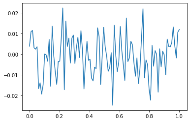

(12주차) 5월23일
- toc:true
- branch: master
- badges: true
- comments: true
- author: 최규빈
강의영상
youtube: https://youtube.com/playlist?list=PLQqh36zP38-xOfpHJG0LrtYt4TUVgqUNy
imports
CNN
CONV의 역할
- 데이터생성 (그냥 흑백대비 데이터)
<tf.Tensor: shape=(50, 25), dtype=float64, numpy=
array([[10., 10., 10., ..., 10., 10., 10.],
[10., 10., 10., ..., 10., 10., 10.],
[10., 10., 10., ..., 10., 10., 10.],
...,
[10., 10., 10., ..., 10., 10., 10.],
[10., 10., 10., ..., 10., 10., 10.],
[10., 10., 10., ..., 10., 10., 10.]])><tf.Tensor: shape=(50, 25), dtype=float64, numpy=
array([[0., 0., 0., ..., 0., 0., 0.],
[0., 0., 0., ..., 0., 0., 0.],
[0., 0., 0., ..., 0., 0., 0.],
...,
[0., 0., 0., ..., 0., 0., 0.],
[0., 0., 0., ..., 0., 0., 0.],
[0., 0., 0., ..., 0., 0., 0.]])><tf.Tensor: shape=(50, 50), dtype=float64, numpy=
array([[10., 10., 10., ..., 0., 0., 0.],
[10., 10., 10., ..., 0., 0., 0.],
[10., 10., 10., ..., 0., 0., 0.],
...,
[10., 10., 10., ..., 0., 0., 0.],
[10., 10., 10., ..., 0., 0., 0.],
[10., 10., 10., ..., 0., 0., 0.]])><tf.Tensor: shape=(50, 50), dtype=float64, numpy=
array([[-0.30380244, 0.06484819, 0.60069937, ..., -0.49237769,
1.72552047, 0.32319886],
[-0.1442766 , 0.32071132, 0.27135225, ..., 0.12584098,
1.77500838, 0.30678486],
[-0.98493241, 0.70428041, -0.10798709, ..., -0.07145503,
0.11185082, 1.4473293 ],
...,
[ 0.41430467, -0.67483518, -0.46844066, ..., 0.76154689,
-1.60328529, -0.37098601],
[-1.65297477, -1.45893833, -1.7887122 , ..., -0.81344932,
-0.21032504, -0.53206832],
[-0.2352507 , -0.77675024, -2.01329394, ..., -1.41071477,
-1.20259288, 0.07060629]])>- conv layer 생성
[<tf.Variable 'conv2d_1/kernel:0' shape=(2, 2, 1, 2) dtype=float32, numpy=
array([[[[ 0.06554878, 0.39761645]],
[[-0.4267348 , -0.376472 ]]],
[[[ 0.2653011 , 0.42274743]],
[[ 0.4461723 , -0.6650867 ]]]], dtype=float32)>,
<tf.Variable 'conv2d_1/bias:0' shape=(2,) dtype=float32, numpy=array([0., 0.], dtype=float32)>]- 가중치의 값을 확인해보자.
<tf.Variable 'conv2d_1/kernel:0' shape=(2, 2, 1, 2) dtype=float32, numpy=
array([[[[ 0.06554878, 0.39761645]],
[[-0.4267348 , -0.376472 ]]],
[[[ 0.2653011 , 0.42274743]],
[[ 0.4461723 , -0.6650867 ]]]], dtype=float32)><tf.Variable 'conv2d_1/bias:0' shape=(2,) dtype=float32, numpy=array([0., 0.], dtype=float32)>- 필터값을 원하는 것으로 변경해보자.
array([[[[ 0.25, -1. ]],
[[ 0.25, 1. ]]],
[[[ 0.25, -1. ]],
[[ 0.25, 1. ]]]])[array([[[[ 0.25, -1. ]],
[[ 0.25, 1. ]]],
[[[ 0.25, -1. ]],
[[ 0.25, 1. ]]]], dtype=float32),
array([0., 0.], dtype=float32)]- 첫번째는 평균을 구하는 필터,
- 두번째는 엣지를 검출하는 필터
- 필터를 넣은 결과를 확인
<tf.Tensor: shape=(1, 49, 49), dtype=float32, numpy=
array([[[ 9.984369 , 10.314403 , 10.114662 , ..., -0.2716803 ,
0.78349805, 1.032628 ],
[ 9.973946 , 10.29709 , 10.011451 , ..., -0.78137755,
0.4853113 , 0.91024333],
[ 9.694317 , 10.180944 , 10.165418 , ..., -1.1441237 ,
-0.10771888, 0.0131253 ],
...,
[ 9.950029 , 9.197831 , 9.421099 , ..., 0.2848997 ,
-0.24674678, -0.35682005],
[ 9.156889 , 8.902268 , 9.352164 , ..., 0.01892059,
-0.46637818, -0.67916614],
[ 8.969021 , 8.490577 , 9.140195 , ..., -0.2541374 ,
-0.9092705 , -0.46859497]]], dtype=float32)><tf.Tensor: shape=(1, 49, 49), dtype=float32, numpy=
array([[[ 0.8336382 , 0.48649216, -1.2854509 , ..., 0.35364777,
3.8670654 , -2.8705451 ],
[ 2.1542006 , -0.8616276 , -0.28092575, ..., 3.2342823 ,
1.8324732 , -0.13274503],
[ 2.0953035 , -0.14879417, 0.08668804, ..., 5.0843253 ,
-0.93870586, 1.4220824 ],
...,
[-1.498992 , -1.5097971 , 2.4028683 , ..., 1.3495452 ,
-3.4761312 , 3.0358381 ],
[-0.89510345, -0.12337971, 1.9229631 , ..., -0.17948717,
-1.7617078 , 0.910556 ],
[-0.3474636 , -1.5663171 , 4.1647916 , ..., -3.4317784 ,
0.81124616, 0.9514559 ]]], dtype=float32)>- 각 채널을 시각화
_5월23일_files/figure-html/cell-23-output-1.png)
- 2사분면: 원래이미지
- 3사분면: 원래이미지 -> 평균을 의미하는 conv적용
- 4사분면: 원래이미지 -> 엣지를 검출하는 conv적용
- conv(XXX)의 각 채널에 한번더 conv를 통과시켜보자
conv(XXX0.reshape(1,49,49,1))[...,0] ### XXX0 -> 평균필터 <=> XXX -> 평균필터 -> 평균필터
conv(XXX0.reshape(1,49,49,1))[...,1] ### XXX0 -> 엣지필터 <=> XXX -> 평균필터 -> 엣지필터
conv(XXX1.reshape(1,49,49,1))[...,0] ### XXX1 -> 평균필터 <=> XXX -> 엣지필터 -> 평균필터
conv(XXX1.reshape(1,49,49,1))[...,1] ### XXX1 -> 엣지필터 <=> XXX -> 엣지필터 -> 엣지필터<tf.Tensor: shape=(1, 48, 48), dtype=float32, numpy=
array([[[ 1.01424513e+01, 1.01844015e+01, 9.86733055e+00, ...,
-4.99692082e-01, 5.39378747e-02, 8.02920163e-01],
[ 1.00365734e+01, 1.01637259e+01, 1.02149420e+01, ...,
-7.43912578e-01, -3.86977196e-01, 3.25240284e-01],
[ 9.74410343e+00, 1.01362820e+01, 1.04401426e+01, ...,
-8.01947534e-01, -6.61381423e-01, -1.04143508e-01],
...,
[ 9.49301243e+00, 9.22852516e+00, 9.76124573e+00, ...,
-3.70009184e-01, -2.82902658e-01, -3.20988595e-01],
[ 9.30175495e+00, 9.21834087e+00, 9.71927547e+00, ...,
-1.98229820e-01, -1.02326170e-01, -4.37277794e-01],
[ 8.87968922e+00, 8.97130108e+00, 9.59087849e+00, ...,
-5.38469851e-03, -4.02716398e-01, -6.30852461e-01]]],
dtype=float32)><matplotlib.image.AxesImage at 0x7f61a4265540>ax[1][0].imshow(XXX0.reshape(49,49),cmap='gray') # 원래이미지 -> 평균필터
ax[1][2].imshow(XXX1.reshape(49,49),cmap='gray') # 원래이미지 -> 엣지필터<matplotlib.image.AxesImage at 0x7f61a429b880>ax[2][0].imshow(conv(XXX0.reshape(1,49,49,1))[...,0].reshape(48,48),cmap='gray') # 원래이미지 -> 평균필터
ax[2][1].imshow(conv(XXX0.reshape(1,49,49,1))[...,1].reshape(48,48),cmap='gray') # 원래이미지 -> 엣지필터
ax[2][2].imshow(conv(XXX1.reshape(1,49,49,1))[...,0].reshape(48,48),cmap='gray') # 원래이미지 -> 평균필터
ax[2][3].imshow(conv(XXX1.reshape(1,49,49,1))[...,1].reshape(48,48),cmap='gray') # 원래이미지 -> 엣지필터<matplotlib.image.AxesImage at 0x7f61a415e380>- 요약 - conv의 weight에 따라서 엣지를 검출하는 필터가 만들어지기도 하고 스무딩의 역할을 하는 필터가 만들어지기도 한다. 그리고 우리는 의미를 알 수 없지만 어떠한 역할을 하는 필터가 만들어질 것이다. - 이것들을 조합하다보면 우연히 이미지를 분류하기에 유리한 특징을 뽑아내는 weight가 맞춰질 수도 있겠다. - 채널수를 많이 만들고 다양한 웨이트조합을 실험하다보면 보다 복잡한 이미지의 특징을 추출할 수도 있을 것이다? - 컨볼루션 레이어의 역할 = 이미지의 특징을 추출하는 역할
- 참고: 스트라이드, 패딩 - 스트라이드: 윈도우가 1칸씩 이동하는 것이 아니라 2~3칸씩 이동함 - 패딩: 이미지의 가장자리에 정당한 값을 넣어서 (예를들어 0) 컨볼루션을 수행. 따라서 컨볼루션 연산 이후에도 이미지의 크기가 줄어들지 않도록 방지한다.
MAXPOOL
- 기본적역할: 이미지의 크기를 줄이는 것 - 이미지의의 크기를 줄여야하는 이유? 어차피 최종적으로 10차원으로 줄어야하므로 - 이미지의 크기를 줄이면서도 동시에 아주 크리티컬한 특징은 손실없이 유지하고 싶다~
- 점점 작은 이미지가 되면서 중요한 특징들은 살아남지만 그렇지 않으면 죽는다. (캐리커쳐 느낌)
- 평균이 아니라 max를 쓴 이유는? 그냥 평균보다 나을것이라고 생각했음.. - 그런데 사실은 꼭 그렇지만은 않아서 최근에는 꼭 맥스풀링을 고집하진 않는 추세 (평균풀링도 많이씀)
CNN 아키텍처의 표현방법
- 아래와 같이 아키텍처의 다이어그램형태로 표현하고 굳이 노드별로 이미지를 그리진 않음

- 물론 아래와 같이 그리는 경우도 있음

Discusstion about CNN
- 격자형태로 배열된 자료를 처리하는데 특화된 신경망이다. - 시계열 (1차원격자), 이미지 (2차원격자)
- 실제응용에서 엄청난 성공을 거두었다.
- 이름의 유래는 컨볼루션이라는 수학적 연산을 사용했기 때문 - 컨볼루션은 조금 특별한 선형변환이다.
- 신경과학의 원리가 심층학습에 영향을 미친 사례이다.
CNN의 모티브
- 희소성 + 매개변수의 공유 - 다소 철학적인 모티브임 - 희소성: 이미지를 분석하여 특징을 뽑아낼때 부분부분의 특징만 뽑으면 된다는 의미 - 매개변수의 공유: 한 채널에는 하나의 역할을 하는 커널을 설계하면 된다는 의미 (스무딩이든 엣징이든). 즉 어떤지역은 스무딩, 어떤지역은 엣징을 할 필요가 없이 한채널에서는 엣징만, 다른채널에서는 스무딩만 수행한뒤 여러채널을 조합해서 이해하면 된다.
- 매개변수 공유효과로 인해서 파라메터가 확 줄어든다.
(예시) (1,6,6,1) -> (1,5,5,2) - MLP방식이면 (36,50) 의 차원을 가진 매트릭스가 필요함 => 1800개의 매개변수 필요 - CNN은 8개의 매개변수 필요
CNN 신경망의 기본구조
- 기본유닛 - conv - activation - pooling - conv - conv - activation - pooling
모형의 성능을 올리기 위한 노력들
dropout
- 아래의 예제를 복습하자.
np.random.seed(43052)
x = np.linspace(0,1,100).reshape(100,1)
y = np.random.normal(loc=0,scale=0.01,size=(100,1))
plt.plot(x,y)
tf.random.set_seed(43052)
net = tf.keras.Sequential()
net.add(tf.keras.layers.Dense(2048,activation='relu'))
net.add(tf.keras.layers.Dense(1))
net.compile(loss='mse',optimizer='adam')
net.fit(x,y,epochs=5000,verbose=0,batch_size=100)2022-05-23 19:33:01.211991: I tensorflow/stream_executor/cuda/cuda_gpu_executor.cc:939] successful NUMA node read from SysFS had negative value (-1), but there must be at least one NUMA node, so returning NUMA node zero<keras.callbacks.History at 0x7f1b9528feb0>- train/test로 나누어서 생각해보자.
tf.random.set_seed(43052)
net = tf.keras.Sequential()
net.add(tf.keras.layers.Dense(2048,activation='relu'))
net.add(tf.keras.layers.Dense(1))
net.compile(loss='mse',optimizer='adam')
net.fit(x[:80],y[:80],epochs=5000,verbose=0,batch_size=80)<keras.callbacks.History at 0x7f1b881f9840>- train에서 추세를 따라가는게 좋은게 아니다 \(\to\) 그냥 직선으로 핏하는거 이외에는 다 오버핏이다.
- 매 에폭마다 적당히 80%의 노드들을 빼고 학습하자 \(\to\) 너무 잘 학습되는 문제는 생기지 않을 것이다 (과적합이 방지될것이다?)
tf.random.set_seed(43052)
net = tf.keras.Sequential()
net.add(tf.keras.layers.Dense(2048,activation='relu'))
net.add(tf.keras.layers.Dropout(0.8))
net.add(tf.keras.layers.Dense(1))
net.compile(loss='mse',optimizer='adam')
net.fit(x[:80],y[:80],epochs=5000,verbose=0,batch_size=80)<keras.callbacks.History at 0x7f1b80381a50>- 드랍아웃에 대한 summary - 직관: 특정노드를 랜덤으로 off시키면 학습이 방해되어 오히려 과적합이 방지되는 효과가 있다 (그렇지만 진짜 중요한 특징이라면 랜덤으로 off 되더라도 어느정도는 학습될 듯) - note: 드랍아웃을 쓰면 오버핏이 줄어드는건 맞지만 완전히 없어지는건 아니다. - note: 오버핏을 줄이는 유일한 방법이 드랍아웃만 있는것도 아니며, 드랍아웃이 오버핏을 줄이는 가장 효과적인 방법도 아니다 (최근에는 dropout보다 batch nomalization을 사용하는 추세임)
train / val / test
- data
#collapse_output
cb1 = tf.keras.callbacks.TensorBoard()
net.fit(X,y,epochs=200,batch_size=200,validation_split=0.2,callbacks=cb1,verbose=1)Epoch 1/200
240/240 [==============================] - 0s 1ms/step - loss: 0.7013 - accuracy: 0.7666 - val_loss: 0.4976 - val_accuracy: 0.8320
Epoch 2/200
240/240 [==============================] - 0s 887us/step - loss: 0.4703 - accuracy: 0.8400 - val_loss: 0.4822 - val_accuracy: 0.8320
Epoch 3/200
240/240 [==============================] - 0s 915us/step - loss: 0.4287 - accuracy: 0.8518 - val_loss: 0.4339 - val_accuracy: 0.8535
Epoch 4/200
240/240 [==============================] - 0s 949us/step - loss: 0.4061 - accuracy: 0.8592 - val_loss: 0.4077 - val_accuracy: 0.8568
Epoch 5/200
240/240 [==============================] - 0s 937us/step - loss: 0.3851 - accuracy: 0.8661 - val_loss: 0.3948 - val_accuracy: 0.8619
Epoch 6/200
240/240 [==============================] - 0s 951us/step - loss: 0.3703 - accuracy: 0.8699 - val_loss: 0.3900 - val_accuracy: 0.8617
Epoch 7/200
240/240 [==============================] - 0s 879us/step - loss: 0.3587 - accuracy: 0.8746 - val_loss: 0.3846 - val_accuracy: 0.8678
Epoch 8/200
240/240 [==============================] - 0s 897us/step - loss: 0.3468 - accuracy: 0.8768 - val_loss: 0.3684 - val_accuracy: 0.8716
Epoch 9/200
240/240 [==============================] - 0s 905us/step - loss: 0.3397 - accuracy: 0.8788 - val_loss: 0.3678 - val_accuracy: 0.8708
Epoch 10/200
240/240 [==============================] - 0s 918us/step - loss: 0.3307 - accuracy: 0.8806 - val_loss: 0.3619 - val_accuracy: 0.8726
Epoch 11/200
240/240 [==============================] - 0s 961us/step - loss: 0.3208 - accuracy: 0.8843 - val_loss: 0.3619 - val_accuracy: 0.8711
Epoch 12/200
240/240 [==============================] - 0s 896us/step - loss: 0.3160 - accuracy: 0.8857 - val_loss: 0.3572 - val_accuracy: 0.8734
Epoch 13/200
240/240 [==============================] - 0s 879us/step - loss: 0.3098 - accuracy: 0.8889 - val_loss: 0.3567 - val_accuracy: 0.8723
Epoch 14/200
240/240 [==============================] - 0s 914us/step - loss: 0.3023 - accuracy: 0.8915 - val_loss: 0.3545 - val_accuracy: 0.8751
Epoch 15/200
240/240 [==============================] - 0s 972us/step - loss: 0.2983 - accuracy: 0.8937 - val_loss: 0.3514 - val_accuracy: 0.8763
Epoch 16/200
240/240 [==============================] - 0s 963us/step - loss: 0.2945 - accuracy: 0.8939 - val_loss: 0.3745 - val_accuracy: 0.8639
Epoch 17/200
240/240 [==============================] - 0s 884us/step - loss: 0.2901 - accuracy: 0.8956 - val_loss: 0.3427 - val_accuracy: 0.8786
Epoch 18/200
240/240 [==============================] - 0s 876us/step - loss: 0.2835 - accuracy: 0.8972 - val_loss: 0.3470 - val_accuracy: 0.8770
Epoch 19/200
240/240 [==============================] - 0s 916us/step - loss: 0.2787 - accuracy: 0.8997 - val_loss: 0.3457 - val_accuracy: 0.8803
Epoch 20/200
240/240 [==============================] - 0s 943us/step - loss: 0.2741 - accuracy: 0.9007 - val_loss: 0.3373 - val_accuracy: 0.8814
Epoch 21/200
240/240 [==============================] - 0s 883us/step - loss: 0.2699 - accuracy: 0.9016 - val_loss: 0.3352 - val_accuracy: 0.8832
Epoch 22/200
240/240 [==============================] - 0s 880us/step - loss: 0.2644 - accuracy: 0.9036 - val_loss: 0.3320 - val_accuracy: 0.8817
Epoch 23/200
240/240 [==============================] - 0s 948us/step - loss: 0.2610 - accuracy: 0.9059 - val_loss: 0.3384 - val_accuracy: 0.8768
Epoch 24/200
240/240 [==============================] - 0s 946us/step - loss: 0.2575 - accuracy: 0.9076 - val_loss: 0.3446 - val_accuracy: 0.8785
Epoch 25/200
240/240 [==============================] - 0s 939us/step - loss: 0.2532 - accuracy: 0.9084 - val_loss: 0.3312 - val_accuracy: 0.8820
Epoch 26/200
240/240 [==============================] - 0s 967us/step - loss: 0.2509 - accuracy: 0.9094 - val_loss: 0.3383 - val_accuracy: 0.8833
Epoch 27/200
240/240 [==============================] - 0s 929us/step - loss: 0.2487 - accuracy: 0.9106 - val_loss: 0.3365 - val_accuracy: 0.8827
Epoch 28/200
240/240 [==============================] - 0s 943us/step - loss: 0.2450 - accuracy: 0.9123 - val_loss: 0.3376 - val_accuracy: 0.8827
Epoch 29/200
240/240 [==============================] - 0s 922us/step - loss: 0.2424 - accuracy: 0.9122 - val_loss: 0.3346 - val_accuracy: 0.8823
Epoch 30/200
240/240 [==============================] - 0s 903us/step - loss: 0.2407 - accuracy: 0.9137 - val_loss: 0.3367 - val_accuracy: 0.8813
Epoch 31/200
240/240 [==============================] - 0s 906us/step - loss: 0.2380 - accuracy: 0.9147 - val_loss: 0.3376 - val_accuracy: 0.8813
Epoch 32/200
240/240 [==============================] - 0s 885us/step - loss: 0.2349 - accuracy: 0.9155 - val_loss: 0.3372 - val_accuracy: 0.8856
Epoch 33/200
240/240 [==============================] - 0s 891us/step - loss: 0.2324 - accuracy: 0.9167 - val_loss: 0.3362 - val_accuracy: 0.8833
Epoch 34/200
240/240 [==============================] - 0s 900us/step - loss: 0.2285 - accuracy: 0.9177 - val_loss: 0.3486 - val_accuracy: 0.8810
Epoch 35/200
240/240 [==============================] - 0s 858us/step - loss: 0.2270 - accuracy: 0.9188 - val_loss: 0.3364 - val_accuracy: 0.8817
Epoch 36/200
240/240 [==============================] - 0s 893us/step - loss: 0.2241 - accuracy: 0.9204 - val_loss: 0.3401 - val_accuracy: 0.8852
Epoch 37/200
240/240 [==============================] - 0s 907us/step - loss: 0.2258 - accuracy: 0.9178 - val_loss: 0.3451 - val_accuracy: 0.8811
Epoch 38/200
240/240 [==============================] - 0s 899us/step - loss: 0.2249 - accuracy: 0.9196 - val_loss: 0.3377 - val_accuracy: 0.8836
Epoch 39/200
240/240 [==============================] - 0s 876us/step - loss: 0.2187 - accuracy: 0.9215 - val_loss: 0.3298 - val_accuracy: 0.8867
Epoch 40/200
240/240 [==============================] - 0s 905us/step - loss: 0.2148 - accuracy: 0.9229 - val_loss: 0.3342 - val_accuracy: 0.8853
Epoch 41/200
240/240 [==============================] - 0s 954us/step - loss: 0.2118 - accuracy: 0.9240 - val_loss: 0.3378 - val_accuracy: 0.8840
Epoch 42/200
240/240 [==============================] - 0s 916us/step - loss: 0.2135 - accuracy: 0.9243 - val_loss: 0.3348 - val_accuracy: 0.8857
Epoch 43/200
240/240 [==============================] - 0s 943us/step - loss: 0.2101 - accuracy: 0.9247 - val_loss: 0.3369 - val_accuracy: 0.8857
Epoch 44/200
240/240 [==============================] - 0s 877us/step - loss: 0.2069 - accuracy: 0.9261 - val_loss: 0.3400 - val_accuracy: 0.8832
Epoch 45/200
240/240 [==============================] - 0s 900us/step - loss: 0.2040 - accuracy: 0.9267 - val_loss: 0.3358 - val_accuracy: 0.8854
Epoch 46/200
240/240 [==============================] - 0s 926us/step - loss: 0.2029 - accuracy: 0.9271 - val_loss: 0.3562 - val_accuracy: 0.8802
Epoch 47/200
240/240 [==============================] - 0s 901us/step - loss: 0.2052 - accuracy: 0.9263 - val_loss: 0.3509 - val_accuracy: 0.8841
Epoch 48/200
240/240 [==============================] - 0s 927us/step - loss: 0.1977 - accuracy: 0.9296 - val_loss: 0.3434 - val_accuracy: 0.8852
Epoch 49/200
240/240 [==============================] - 0s 870us/step - loss: 0.1980 - accuracy: 0.9281 - val_loss: 0.3587 - val_accuracy: 0.8810
Epoch 50/200
240/240 [==============================] - 0s 874us/step - loss: 0.1972 - accuracy: 0.9292 - val_loss: 0.3483 - val_accuracy: 0.8828
Epoch 51/200
240/240 [==============================] - 0s 924us/step - loss: 0.1973 - accuracy: 0.9286 - val_loss: 0.3518 - val_accuracy: 0.8834
Epoch 52/200
240/240 [==============================] - 0s 886us/step - loss: 0.1920 - accuracy: 0.9309 - val_loss: 0.3647 - val_accuracy: 0.8796
Epoch 53/200
240/240 [==============================] - 0s 901us/step - loss: 0.1935 - accuracy: 0.9306 - val_loss: 0.3571 - val_accuracy: 0.8831
Epoch 54/200
240/240 [==============================] - 0s 946us/step - loss: 0.1918 - accuracy: 0.9311 - val_loss: 0.3545 - val_accuracy: 0.8834
Epoch 55/200
240/240 [==============================] - 0s 950us/step - loss: 0.1921 - accuracy: 0.9306 - val_loss: 0.3643 - val_accuracy: 0.8823
Epoch 56/200
240/240 [==============================] - 0s 913us/step - loss: 0.1870 - accuracy: 0.9335 - val_loss: 0.3665 - val_accuracy: 0.8798
Epoch 57/200
240/240 [==============================] - 0s 908us/step - loss: 0.1857 - accuracy: 0.9328 - val_loss: 0.3539 - val_accuracy: 0.8833
Epoch 58/200
240/240 [==============================] - 0s 919us/step - loss: 0.1815 - accuracy: 0.9353 - val_loss: 0.3569 - val_accuracy: 0.8833
Epoch 59/200
240/240 [==============================] - 0s 863us/step - loss: 0.1832 - accuracy: 0.9337 - val_loss: 0.3603 - val_accuracy: 0.8833
Epoch 60/200
240/240 [==============================] - 0s 912us/step - loss: 0.1804 - accuracy: 0.9361 - val_loss: 0.3690 - val_accuracy: 0.8812
Epoch 61/200
240/240 [==============================] - 0s 858us/step - loss: 0.1769 - accuracy: 0.9368 - val_loss: 0.3624 - val_accuracy: 0.8840
Epoch 62/200
240/240 [==============================] - 0s 885us/step - loss: 0.1756 - accuracy: 0.9366 - val_loss: 0.3637 - val_accuracy: 0.8829
Epoch 63/200
240/240 [==============================] - 0s 903us/step - loss: 0.1766 - accuracy: 0.9363 - val_loss: 0.3663 - val_accuracy: 0.8824
Epoch 64/200
240/240 [==============================] - 0s 878us/step - loss: 0.1767 - accuracy: 0.9363 - val_loss: 0.3694 - val_accuracy: 0.8825
Epoch 65/200
240/240 [==============================] - 0s 866us/step - loss: 0.1733 - accuracy: 0.9377 - val_loss: 0.3820 - val_accuracy: 0.8838
Epoch 66/200
240/240 [==============================] - 0s 949us/step - loss: 0.1742 - accuracy: 0.9370 - val_loss: 0.3721 - val_accuracy: 0.8825
Epoch 67/200
240/240 [==============================] - 0s 887us/step - loss: 0.1698 - accuracy: 0.9386 - val_loss: 0.3717 - val_accuracy: 0.8838
Epoch 68/200
240/240 [==============================] - 0s 942us/step - loss: 0.1683 - accuracy: 0.9399 - val_loss: 0.3823 - val_accuracy: 0.8821
Epoch 69/200
240/240 [==============================] - 0s 951us/step - loss: 0.1680 - accuracy: 0.9406 - val_loss: 0.3739 - val_accuracy: 0.8865
Epoch 70/200
240/240 [==============================] - 0s 900us/step - loss: 0.1673 - accuracy: 0.9395 - val_loss: 0.3789 - val_accuracy: 0.8821
Epoch 71/200
240/240 [==============================] - 0s 904us/step - loss: 0.1671 - accuracy: 0.9396 - val_loss: 0.3881 - val_accuracy: 0.8808
Epoch 72/200
240/240 [==============================] - 0s 915us/step - loss: 0.1664 - accuracy: 0.9396 - val_loss: 0.3821 - val_accuracy: 0.8824
Epoch 73/200
240/240 [==============================] - 0s 899us/step - loss: 0.1603 - accuracy: 0.9433 - val_loss: 0.3864 - val_accuracy: 0.8822
Epoch 74/200
240/240 [==============================] - 0s 926us/step - loss: 0.1621 - accuracy: 0.9411 - val_loss: 0.3850 - val_accuracy: 0.8820
Epoch 75/200
240/240 [==============================] - 0s 902us/step - loss: 0.1578 - accuracy: 0.9439 - val_loss: 0.3827 - val_accuracy: 0.8838
Epoch 76/200
240/240 [==============================] - 0s 899us/step - loss: 0.1589 - accuracy: 0.9431 - val_loss: 0.4160 - val_accuracy: 0.8751
Epoch 77/200
240/240 [==============================] - 0s 909us/step - loss: 0.1597 - accuracy: 0.9426 - val_loss: 0.3934 - val_accuracy: 0.8810
Epoch 78/200
240/240 [==============================] - 0s 894us/step - loss: 0.1582 - accuracy: 0.9420 - val_loss: 0.4076 - val_accuracy: 0.8777
Epoch 79/200
240/240 [==============================] - 0s 897us/step - loss: 0.1573 - accuracy: 0.9439 - val_loss: 0.3890 - val_accuracy: 0.8832
Epoch 80/200
240/240 [==============================] - 0s 917us/step - loss: 0.1567 - accuracy: 0.9445 - val_loss: 0.4039 - val_accuracy: 0.8805
Epoch 81/200
240/240 [==============================] - 0s 921us/step - loss: 0.1529 - accuracy: 0.9455 - val_loss: 0.3967 - val_accuracy: 0.8818
Epoch 82/200
240/240 [==============================] - 0s 919us/step - loss: 0.1522 - accuracy: 0.9456 - val_loss: 0.4028 - val_accuracy: 0.8796
Epoch 83/200
240/240 [==============================] - 0s 984us/step - loss: 0.1501 - accuracy: 0.9462 - val_loss: 0.4147 - val_accuracy: 0.8802
Epoch 84/200
240/240 [==============================] - 0s 873us/step - loss: 0.1493 - accuracy: 0.9466 - val_loss: 0.3956 - val_accuracy: 0.8818
Epoch 85/200
240/240 [==============================] - 0s 882us/step - loss: 0.1484 - accuracy: 0.9470 - val_loss: 0.4121 - val_accuracy: 0.8807
Epoch 86/200
240/240 [==============================] - 0s 894us/step - loss: 0.1504 - accuracy: 0.9449 - val_loss: 0.4089 - val_accuracy: 0.8790
Epoch 87/200
240/240 [==============================] - 0s 924us/step - loss: 0.1437 - accuracy: 0.9493 - val_loss: 0.4243 - val_accuracy: 0.8776
Epoch 88/200
240/240 [==============================] - 0s 905us/step - loss: 0.1462 - accuracy: 0.9478 - val_loss: 0.4123 - val_accuracy: 0.8799
Epoch 89/200
240/240 [==============================] - 0s 950us/step - loss: 0.1444 - accuracy: 0.9479 - val_loss: 0.4105 - val_accuracy: 0.8823
Epoch 90/200
240/240 [==============================] - 0s 908us/step - loss: 0.1460 - accuracy: 0.9482 - val_loss: 0.4103 - val_accuracy: 0.8827
Epoch 91/200
240/240 [==============================] - 0s 889us/step - loss: 0.1425 - accuracy: 0.9489 - val_loss: 0.4112 - val_accuracy: 0.8819
Epoch 92/200
240/240 [==============================] - 0s 869us/step - loss: 0.1455 - accuracy: 0.9483 - val_loss: 0.4115 - val_accuracy: 0.8818
Epoch 93/200
240/240 [==============================] - 0s 917us/step - loss: 0.1412 - accuracy: 0.9491 - val_loss: 0.4177 - val_accuracy: 0.8805
Epoch 94/200
240/240 [==============================] - 0s 865us/step - loss: 0.1398 - accuracy: 0.9500 - val_loss: 0.4177 - val_accuracy: 0.8813
Epoch 95/200
240/240 [==============================] - 0s 910us/step - loss: 0.1417 - accuracy: 0.9504 - val_loss: 0.4248 - val_accuracy: 0.8796
Epoch 96/200
240/240 [==============================] - 0s 917us/step - loss: 0.1392 - accuracy: 0.9499 - val_loss: 0.4207 - val_accuracy: 0.8840
Epoch 97/200
240/240 [==============================] - 0s 872us/step - loss: 0.1366 - accuracy: 0.9514 - val_loss: 0.4218 - val_accuracy: 0.8810
Epoch 98/200
240/240 [==============================] - 0s 896us/step - loss: 0.1344 - accuracy: 0.9519 - val_loss: 0.4281 - val_accuracy: 0.8794
Epoch 99/200
240/240 [==============================] - 0s 928us/step - loss: 0.1346 - accuracy: 0.9521 - val_loss: 0.4304 - val_accuracy: 0.8803
Epoch 100/200
240/240 [==============================] - 0s 849us/step - loss: 0.1368 - accuracy: 0.9511 - val_loss: 0.4335 - val_accuracy: 0.8800
Epoch 101/200
240/240 [==============================] - 0s 930us/step - loss: 0.1317 - accuracy: 0.9540 - val_loss: 0.4345 - val_accuracy: 0.8799
Epoch 102/200
240/240 [==============================] - 0s 919us/step - loss: 0.1318 - accuracy: 0.9530 - val_loss: 0.4430 - val_accuracy: 0.8774
Epoch 103/200
240/240 [==============================] - 0s 905us/step - loss: 0.1306 - accuracy: 0.9538 - val_loss: 0.4427 - val_accuracy: 0.8783
Epoch 104/200
240/240 [==============================] - 0s 892us/step - loss: 0.1322 - accuracy: 0.9532 - val_loss: 0.4409 - val_accuracy: 0.8797
Epoch 105/200
240/240 [==============================] - 0s 853us/step - loss: 0.1322 - accuracy: 0.9524 - val_loss: 0.4631 - val_accuracy: 0.8759
Epoch 106/200
240/240 [==============================] - 0s 901us/step - loss: 0.1295 - accuracy: 0.9540 - val_loss: 0.4451 - val_accuracy: 0.8811
Epoch 107/200
240/240 [==============================] - 0s 910us/step - loss: 0.1287 - accuracy: 0.9539 - val_loss: 0.4393 - val_accuracy: 0.8795
Epoch 108/200
240/240 [==============================] - 0s 927us/step - loss: 0.1265 - accuracy: 0.9549 - val_loss: 0.4547 - val_accuracy: 0.8783
Epoch 109/200
240/240 [==============================] - 0s 899us/step - loss: 0.1257 - accuracy: 0.9553 - val_loss: 0.4467 - val_accuracy: 0.8798
Epoch 110/200
240/240 [==============================] - 0s 911us/step - loss: 0.1264 - accuracy: 0.9558 - val_loss: 0.4494 - val_accuracy: 0.8775
Epoch 111/200
240/240 [==============================] - 0s 911us/step - loss: 0.1256 - accuracy: 0.9550 - val_loss: 0.4600 - val_accuracy: 0.8777
Epoch 112/200
240/240 [==============================] - 0s 897us/step - loss: 0.1241 - accuracy: 0.9561 - val_loss: 0.4468 - val_accuracy: 0.8785
Epoch 113/200
240/240 [==============================] - 0s 904us/step - loss: 0.1242 - accuracy: 0.9556 - val_loss: 0.4592 - val_accuracy: 0.8788
Epoch 114/200
240/240 [==============================] - 0s 913us/step - loss: 0.1224 - accuracy: 0.9574 - val_loss: 0.4640 - val_accuracy: 0.8778
Epoch 115/200
240/240 [==============================] - 0s 912us/step - loss: 0.1235 - accuracy: 0.9563 - val_loss: 0.4590 - val_accuracy: 0.8777
Epoch 116/200
240/240 [==============================] - 0s 907us/step - loss: 0.1222 - accuracy: 0.9568 - val_loss: 0.4762 - val_accuracy: 0.8781
Epoch 117/200
240/240 [==============================] - 0s 913us/step - loss: 0.1178 - accuracy: 0.9583 - val_loss: 0.4585 - val_accuracy: 0.8818
Epoch 118/200
240/240 [==============================] - 0s 901us/step - loss: 0.1207 - accuracy: 0.9571 - val_loss: 0.4796 - val_accuracy: 0.8770
Epoch 119/200
240/240 [==============================] - 0s 883us/step - loss: 0.1194 - accuracy: 0.9574 - val_loss: 0.4711 - val_accuracy: 0.8790
Epoch 120/200
240/240 [==============================] - 0s 953us/step - loss: 0.1204 - accuracy: 0.9565 - val_loss: 0.4612 - val_accuracy: 0.8796
Epoch 121/200
240/240 [==============================] - 0s 887us/step - loss: 0.1138 - accuracy: 0.9596 - val_loss: 0.4792 - val_accuracy: 0.8770
Epoch 122/200
240/240 [==============================] - 0s 874us/step - loss: 0.1142 - accuracy: 0.9602 - val_loss: 0.4784 - val_accuracy: 0.8762
Epoch 123/200
240/240 [==============================] - 0s 914us/step - loss: 0.1184 - accuracy: 0.9574 - val_loss: 0.4791 - val_accuracy: 0.8787
Epoch 124/200
240/240 [==============================] - 0s 922us/step - loss: 0.1161 - accuracy: 0.9593 - val_loss: 0.4876 - val_accuracy: 0.8763
Epoch 125/200
240/240 [==============================] - 0s 882us/step - loss: 0.1159 - accuracy: 0.9584 - val_loss: 0.4888 - val_accuracy: 0.8745
Epoch 126/200
240/240 [==============================] - 0s 951us/step - loss: 0.1140 - accuracy: 0.9597 - val_loss: 0.5025 - val_accuracy: 0.8754
Epoch 127/200
240/240 [==============================] - 0s 900us/step - loss: 0.1151 - accuracy: 0.9593 - val_loss: 0.4892 - val_accuracy: 0.8747
Epoch 128/200
240/240 [==============================] - 0s 890us/step - loss: 0.1100 - accuracy: 0.9611 - val_loss: 0.4833 - val_accuracy: 0.8777
Epoch 129/200
240/240 [==============================] - 0s 890us/step - loss: 0.1121 - accuracy: 0.9606 - val_loss: 0.4996 - val_accuracy: 0.8720
Epoch 130/200
240/240 [==============================] - 0s 892us/step - loss: 0.1097 - accuracy: 0.9614 - val_loss: 0.4904 - val_accuracy: 0.8779
Epoch 131/200
240/240 [==============================] - 0s 888us/step - loss: 0.1084 - accuracy: 0.9620 - val_loss: 0.4944 - val_accuracy: 0.8748
Epoch 132/200
240/240 [==============================] - 0s 931us/step - loss: 0.1123 - accuracy: 0.9604 - val_loss: 0.4892 - val_accuracy: 0.8778
Epoch 133/200
240/240 [==============================] - 0s 896us/step - loss: 0.1097 - accuracy: 0.9621 - val_loss: 0.5165 - val_accuracy: 0.8733
Epoch 134/200
240/240 [==============================] - 0s 897us/step - loss: 0.1050 - accuracy: 0.9631 - val_loss: 0.5124 - val_accuracy: 0.8731
Epoch 135/200
240/240 [==============================] - 0s 915us/step - loss: 0.1093 - accuracy: 0.9618 - val_loss: 0.5165 - val_accuracy: 0.8733
Epoch 136/200
240/240 [==============================] - 0s 909us/step - loss: 0.1045 - accuracy: 0.9640 - val_loss: 0.5045 - val_accuracy: 0.8781
Epoch 137/200
240/240 [==============================] - 0s 931us/step - loss: 0.1056 - accuracy: 0.9627 - val_loss: 0.5124 - val_accuracy: 0.8773
Epoch 138/200
240/240 [==============================] - 0s 905us/step - loss: 0.1089 - accuracy: 0.9610 - val_loss: 0.5152 - val_accuracy: 0.8751
Epoch 139/200
240/240 [==============================] - 0s 922us/step - loss: 0.1059 - accuracy: 0.9628 - val_loss: 0.5150 - val_accuracy: 0.8744
Epoch 140/200
240/240 [==============================] - 0s 923us/step - loss: 0.1031 - accuracy: 0.9638 - val_loss: 0.5156 - val_accuracy: 0.8740
Epoch 141/200
240/240 [==============================] - 0s 870us/step - loss: 0.1063 - accuracy: 0.9620 - val_loss: 0.5207 - val_accuracy: 0.8719
Epoch 142/200
240/240 [==============================] - 0s 904us/step - loss: 0.1054 - accuracy: 0.9621 - val_loss: 0.5220 - val_accuracy: 0.8740
Epoch 143/200
240/240 [==============================] - 0s 929us/step - loss: 0.1043 - accuracy: 0.9623 - val_loss: 0.5356 - val_accuracy: 0.8736
Epoch 144/200
240/240 [==============================] - 0s 869us/step - loss: 0.1039 - accuracy: 0.9636 - val_loss: 0.5403 - val_accuracy: 0.8737
Epoch 145/200
240/240 [==============================] - 0s 872us/step - loss: 0.1014 - accuracy: 0.9649 - val_loss: 0.5294 - val_accuracy: 0.8751
Epoch 146/200
240/240 [==============================] - 0s 903us/step - loss: 0.1027 - accuracy: 0.9636 - val_loss: 0.5321 - val_accuracy: 0.8770
Epoch 147/200
240/240 [==============================] - 0s 906us/step - loss: 0.1012 - accuracy: 0.9646 - val_loss: 0.5329 - val_accuracy: 0.8748
Epoch 148/200
240/240 [==============================] - 0s 909us/step - loss: 0.1006 - accuracy: 0.9645 - val_loss: 0.5368 - val_accuracy: 0.8743
Epoch 149/200
240/240 [==============================] - 0s 872us/step - loss: 0.0975 - accuracy: 0.9656 - val_loss: 0.5320 - val_accuracy: 0.8759
Epoch 150/200
240/240 [==============================] - 0s 895us/step - loss: 0.0985 - accuracy: 0.9660 - val_loss: 0.5357 - val_accuracy: 0.8745
Epoch 151/200
240/240 [==============================] - 0s 896us/step - loss: 0.0962 - accuracy: 0.9668 - val_loss: 0.5353 - val_accuracy: 0.8748
Epoch 152/200
240/240 [==============================] - 0s 936us/step - loss: 0.0955 - accuracy: 0.9674 - val_loss: 0.5318 - val_accuracy: 0.8763
Epoch 153/200
240/240 [==============================] - 0s 878us/step - loss: 0.0970 - accuracy: 0.9660 - val_loss: 0.5866 - val_accuracy: 0.8702
Epoch 154/200
240/240 [==============================] - 0s 940us/step - loss: 0.0992 - accuracy: 0.9646 - val_loss: 0.5421 - val_accuracy: 0.8750
Epoch 155/200
240/240 [==============================] - 0s 931us/step - loss: 0.0965 - accuracy: 0.9661 - val_loss: 0.5436 - val_accuracy: 0.8739
Epoch 156/200
240/240 [==============================] - 0s 939us/step - loss: 0.0959 - accuracy: 0.9666 - val_loss: 0.5542 - val_accuracy: 0.8745
Epoch 157/200
240/240 [==============================] - 0s 898us/step - loss: 0.0980 - accuracy: 0.9647 - val_loss: 0.5441 - val_accuracy: 0.8747
Epoch 158/200
240/240 [==============================] - 0s 905us/step - loss: 0.0925 - accuracy: 0.9676 - val_loss: 0.5507 - val_accuracy: 0.8746
Epoch 159/200
240/240 [==============================] - 0s 905us/step - loss: 0.0950 - accuracy: 0.9663 - val_loss: 0.5700 - val_accuracy: 0.8712
Epoch 160/200
240/240 [==============================] - 0s 927us/step - loss: 0.0908 - accuracy: 0.9679 - val_loss: 0.5641 - val_accuracy: 0.8727
Epoch 161/200
240/240 [==============================] - 0s 937us/step - loss: 0.0936 - accuracy: 0.9668 - val_loss: 0.5689 - val_accuracy: 0.8750
Epoch 162/200
240/240 [==============================] - 0s 899us/step - loss: 0.0888 - accuracy: 0.9694 - val_loss: 0.5641 - val_accuracy: 0.8772
Epoch 163/200
240/240 [==============================] - 0s 907us/step - loss: 0.0903 - accuracy: 0.9685 - val_loss: 0.5628 - val_accuracy: 0.8737
Epoch 164/200
240/240 [==============================] - 0s 908us/step - loss: 0.0923 - accuracy: 0.9675 - val_loss: 0.5623 - val_accuracy: 0.8752
Epoch 165/200
240/240 [==============================] - 0s 949us/step - loss: 0.0880 - accuracy: 0.9696 - val_loss: 0.5775 - val_accuracy: 0.8713
Epoch 166/200
240/240 [==============================] - 0s 930us/step - loss: 0.0919 - accuracy: 0.9672 - val_loss: 0.5924 - val_accuracy: 0.8719
Epoch 167/200
240/240 [==============================] - 0s 932us/step - loss: 0.0868 - accuracy: 0.9697 - val_loss: 0.5952 - val_accuracy: 0.8719
Epoch 168/200
240/240 [==============================] - 0s 861us/step - loss: 0.0910 - accuracy: 0.9679 - val_loss: 0.5820 - val_accuracy: 0.8733
Epoch 169/200
240/240 [==============================] - 0s 938us/step - loss: 0.0871 - accuracy: 0.9700 - val_loss: 0.5781 - val_accuracy: 0.8734
Epoch 170/200
240/240 [==============================] - 0s 912us/step - loss: 0.0885 - accuracy: 0.9691 - val_loss: 0.5683 - val_accuracy: 0.8742
Epoch 171/200
240/240 [==============================] - 0s 939us/step - loss: 0.0894 - accuracy: 0.9680 - val_loss: 0.5945 - val_accuracy: 0.8721
Epoch 172/200
240/240 [==============================] - 0s 888us/step - loss: 0.0878 - accuracy: 0.9684 - val_loss: 0.5798 - val_accuracy: 0.8744
Epoch 173/200
240/240 [==============================] - 0s 917us/step - loss: 0.0852 - accuracy: 0.9710 - val_loss: 0.6017 - val_accuracy: 0.8690
Epoch 174/200
240/240 [==============================] - 0s 872us/step - loss: 0.0838 - accuracy: 0.9714 - val_loss: 0.5840 - val_accuracy: 0.8753
Epoch 175/200
240/240 [==============================] - 0s 937us/step - loss: 0.0863 - accuracy: 0.9697 - val_loss: 0.5770 - val_accuracy: 0.8726
Epoch 176/200
240/240 [==============================] - 0s 892us/step - loss: 0.0854 - accuracy: 0.9697 - val_loss: 0.5971 - val_accuracy: 0.8741
Epoch 177/200
240/240 [==============================] - 0s 924us/step - loss: 0.0896 - accuracy: 0.9674 - val_loss: 0.5859 - val_accuracy: 0.8743
Epoch 178/200
240/240 [==============================] - 0s 904us/step - loss: 0.0845 - accuracy: 0.9699 - val_loss: 0.6103 - val_accuracy: 0.8723
Epoch 179/200
240/240 [==============================] - 0s 889us/step - loss: 0.0863 - accuracy: 0.9688 - val_loss: 0.6157 - val_accuracy: 0.8708
Epoch 180/200
240/240 [==============================] - 0s 902us/step - loss: 0.0850 - accuracy: 0.9697 - val_loss: 0.5974 - val_accuracy: 0.8752
Epoch 181/200
240/240 [==============================] - 0s 899us/step - loss: 0.0825 - accuracy: 0.9710 - val_loss: 0.6102 - val_accuracy: 0.8736
Epoch 182/200
240/240 [==============================] - 0s 895us/step - loss: 0.0833 - accuracy: 0.9709 - val_loss: 0.6265 - val_accuracy: 0.8690
Epoch 183/200
240/240 [==============================] - 0s 899us/step - loss: 0.0821 - accuracy: 0.9715 - val_loss: 0.6197 - val_accuracy: 0.8718
Epoch 184/200
240/240 [==============================] - 0s 940us/step - loss: 0.0791 - accuracy: 0.9727 - val_loss: 0.6139 - val_accuracy: 0.8727
Epoch 185/200
240/240 [==============================] - 0s 880us/step - loss: 0.0815 - accuracy: 0.9716 - val_loss: 0.6055 - val_accuracy: 0.8718
Epoch 186/200
240/240 [==============================] - 0s 878us/step - loss: 0.0860 - accuracy: 0.9696 - val_loss: 0.6192 - val_accuracy: 0.8713
Epoch 187/200
240/240 [==============================] - 0s 925us/step - loss: 0.0905 - accuracy: 0.9680 - val_loss: 0.6147 - val_accuracy: 0.8722
Epoch 188/200
240/240 [==============================] - 0s 884us/step - loss: 0.0826 - accuracy: 0.9707 - val_loss: 0.6203 - val_accuracy: 0.8737
Epoch 189/200
240/240 [==============================] - 0s 934us/step - loss: 0.0810 - accuracy: 0.9722 - val_loss: 0.6316 - val_accuracy: 0.8701
Epoch 190/200
240/240 [==============================] - 0s 899us/step - loss: 0.0763 - accuracy: 0.9735 - val_loss: 0.6246 - val_accuracy: 0.8758
Epoch 191/200
240/240 [==============================] - 0s 888us/step - loss: 0.0767 - accuracy: 0.9736 - val_loss: 0.6358 - val_accuracy: 0.8712
Epoch 192/200
240/240 [==============================] - 0s 867us/step - loss: 0.0792 - accuracy: 0.9728 - val_loss: 0.6281 - val_accuracy: 0.8749
Epoch 193/200
240/240 [==============================] - 0s 932us/step - loss: 0.0764 - accuracy: 0.9741 - val_loss: 0.6248 - val_accuracy: 0.8737
Epoch 194/200
240/240 [==============================] - 0s 919us/step - loss: 0.0765 - accuracy: 0.9733 - val_loss: 0.6223 - val_accuracy: 0.8734
Epoch 195/200
240/240 [==============================] - 0s 870us/step - loss: 0.0796 - accuracy: 0.9724 - val_loss: 0.6413 - val_accuracy: 0.8707
Epoch 196/200
240/240 [==============================] - 0s 903us/step - loss: 0.0750 - accuracy: 0.9742 - val_loss: 0.6315 - val_accuracy: 0.8737
Epoch 197/200
240/240 [==============================] - 0s 901us/step - loss: 0.0789 - accuracy: 0.9724 - val_loss: 0.6602 - val_accuracy: 0.8684
Epoch 198/200
240/240 [==============================] - 0s 915us/step - loss: 0.0793 - accuracy: 0.9720 - val_loss: 0.6615 - val_accuracy: 0.8698
Epoch 199/200
240/240 [==============================] - 0s 892us/step - loss: 0.0727 - accuracy: 0.9753 - val_loss: 0.6486 - val_accuracy: 0.8692
Epoch 200/200
240/240 [==============================] - 0s 937us/step - loss: 0.0736 - accuracy: 0.9747 - val_loss: 0.6474 - val_accuracy: 0.8723<keras.callbacks.History at 0x7f1b802e05b0>- 텐서보드 여는 방법1
(참고사항) 파이썬 3.10의 경우 아래의 수정이 필요
?/python3.10/site-packages/tensorboard/_vendor/html5lib/_trie/_base.py 을 열고
와 같이 수정한다.
- 왜냐하면 파이썬 3.10부터
from collections import Mapping가 동작하지 않고from collections.abc import Mapping가 동작하도록 문법이 바뀜
- 텐서보드를 실행하는 방법2
조기종료
- 텐서보드를 살펴보니 특정에폭 이후에는 오히려 과적합이 진행되는 듯 하다 (학습할수록 손해인듯 하다) \(\to\) 그 특정에폭까지만 학습해보자
tf.random.set_seed(43052)
net = tf.keras.Sequential()
net.add(tf.keras.layers.Flatten())
net.add(tf.keras.layers.Dense(5000,activation='relu')) ## 과적합좀 시키려고
net.add(tf.keras.layers.Dense(5000,activation='relu')) ## 레이어를 2장만듬 + 레이어하나당 노드수도 증가
net.add(tf.keras.layers.Dense(10,activation='softmax'))
net.compile(optimizer='adam',loss=tf.losses.categorical_crossentropy,metrics='accuracy')#
#cb1 = tf.keras.callbacks.TensorBoard()
cb2 = tf.keras.callbacks.EarlyStopping(patience=1) # val-loss가 1회증가하면 멈추어라
net.fit(X,y,epochs=200,batch_size=200,validation_split=0.2,callbacks=cb2,verbose=1)Epoch 1/200
240/240 [==============================] - 1s 4ms/step - loss: 0.5483 - accuracy: 0.8134 - val_loss: 0.4027 - val_accuracy: 0.8546
Epoch 2/200
240/240 [==============================] - 1s 3ms/step - loss: 0.3568 - accuracy: 0.8671 - val_loss: 0.3531 - val_accuracy: 0.8712
Epoch 3/200
240/240 [==============================] - 1s 3ms/step - loss: 0.3210 - accuracy: 0.8799 - val_loss: 0.3477 - val_accuracy: 0.8733
Epoch 4/200
240/240 [==============================] - 1s 3ms/step - loss: 0.2971 - accuracy: 0.8876 - val_loss: 0.3502 - val_accuracy: 0.8776<keras.callbacks.History at 0x7f1b80086650>#
#cb1 = tf.keras.callbacks.TensorBoard()
cb2 = tf.keras.callbacks.EarlyStopping(patience=1) # val-loss가 1회증가하면 멈추어라
net.fit(X,y,epochs=200,batch_size=200,validation_split=0.2,callbacks=cb2,verbose=1)Epoch 1/200
240/240 [==============================] - 1s 3ms/step - loss: 0.2791 - accuracy: 0.8935 - val_loss: 0.3224 - val_accuracy: 0.8820
Epoch 2/200
240/240 [==============================] - 1s 3ms/step - loss: 0.2619 - accuracy: 0.8999 - val_loss: 0.3498 - val_accuracy: 0.8779<keras.callbacks.History at 0x7f1b24290a90>#
#cb1 = tf.keras.callbacks.TensorBoard()
cb2 = tf.keras.callbacks.EarlyStopping(patience=1) # val-loss가 1회증가하면 멈추어라
net.fit(X,y,epochs=200,batch_size=200,validation_split=0.2,callbacks=cb2,verbose=1)Epoch 1/200
240/240 [==============================] - 1s 3ms/step - loss: 0.2491 - accuracy: 0.9043 - val_loss: 0.3641 - val_accuracy: 0.8711
Epoch 2/200
240/240 [==============================] - 1s 3ms/step - loss: 0.2328 - accuracy: 0.9110 - val_loss: 0.3282 - val_accuracy: 0.8848
Epoch 3/200
240/240 [==============================] - 1s 3ms/step - loss: 0.2254 - accuracy: 0.9151 - val_loss: 0.3280 - val_accuracy: 0.8843
Epoch 4/200
240/240 [==============================] - 1s 3ms/step - loss: 0.2144 - accuracy: 0.9177 - val_loss: 0.3191 - val_accuracy: 0.8925
Epoch 5/200
240/240 [==============================] - 1s 3ms/step - loss: 0.2074 - accuracy: 0.9223 - val_loss: 0.3152 - val_accuracy: 0.8949
Epoch 6/200
240/240 [==============================] - 1s 3ms/step - loss: 0.1952 - accuracy: 0.9250 - val_loss: 0.3322 - val_accuracy: 0.8863<keras.callbacks.History at 0x7f1b242c1660>#
#cb1 = tf.keras.callbacks.TensorBoard()
cb2 = tf.keras.callbacks.EarlyStopping(patience=1) # val-loss가 1회증가하면 멈추어라
net.fit(X,y,epochs=200,batch_size=200,validation_split=0.2,callbacks=cb2,verbose=1)Epoch 1/200
240/240 [==============================] - 1s 3ms/step - loss: 0.1908 - accuracy: 0.9257 - val_loss: 0.3513 - val_accuracy: 0.8836
Epoch 2/200
240/240 [==============================] - 1s 3ms/step - loss: 0.1799 - accuracy: 0.9304 - val_loss: 0.3376 - val_accuracy: 0.8901
Epoch 3/200
240/240 [==============================] - 1s 3ms/step - loss: 0.1712 - accuracy: 0.9346 - val_loss: 0.3568 - val_accuracy: 0.8894<keras.callbacks.History at 0x7f1b24302230>#
#cb1 = tf.keras.callbacks.TensorBoard()
cb2 = tf.keras.callbacks.EarlyStopping(patience=1) # val-loss가 1회증가하면 멈추어라
net.fit(X,y,epochs=200,batch_size=200,validation_split=0.2,callbacks=cb2,verbose=1)Epoch 1/200
240/240 [==============================] - 1s 3ms/step - loss: 0.1591 - accuracy: 0.9367 - val_loss: 0.3995 - val_accuracy: 0.8780
Epoch 2/200
240/240 [==============================] - 1s 3ms/step - loss: 0.1552 - accuracy: 0.9398 - val_loss: 0.3469 - val_accuracy: 0.8917
Epoch 3/200
240/240 [==============================] - 1s 3ms/step - loss: 0.1481 - accuracy: 0.9423 - val_loss: 0.3726 - val_accuracy: 0.8853<keras.callbacks.History at 0x7f1b24136e00>- 몇 번 좀 참았다가 멈추면 좋겠다.
tf.random.set_seed(43052)
net = tf.keras.Sequential()
net.add(tf.keras.layers.Flatten())
net.add(tf.keras.layers.Dense(5000,activation='relu')) ## 과적합좀 시키려고
net.add(tf.keras.layers.Dense(5000,activation='relu')) ## 레이어를 2장만듬 + 레이어하나당 노드수도 증가
net.add(tf.keras.layers.Dense(10,activation='softmax'))
net.compile(optimizer='adam',loss=tf.losses.categorical_crossentropy,metrics='accuracy')#
#cb1 = tf.keras.callbacks.TensorBoard()
cb2 = tf.keras.callbacks.EarlyStopping(patience=5) # 좀더 참다가 멈추어라
net.fit(X,y,epochs=200,batch_size=200,validation_split=0.2,callbacks=cb2,verbose=1)Epoch 1/200
240/240 [==============================] - 1s 4ms/step - loss: 0.5475 - accuracy: 0.8139 - val_loss: 0.4219 - val_accuracy: 0.8453
Epoch 2/200
240/240 [==============================] - 1s 3ms/step - loss: 0.3575 - accuracy: 0.8676 - val_loss: 0.3647 - val_accuracy: 0.8712
Epoch 3/200
240/240 [==============================] - 1s 3ms/step - loss: 0.3219 - accuracy: 0.8792 - val_loss: 0.3559 - val_accuracy: 0.8710
Epoch 4/200
240/240 [==============================] - 1s 3ms/step - loss: 0.2990 - accuracy: 0.8883 - val_loss: 0.3448 - val_accuracy: 0.8808
Epoch 5/200
240/240 [==============================] - 1s 3ms/step - loss: 0.2759 - accuracy: 0.8966 - val_loss: 0.3337 - val_accuracy: 0.8792
Epoch 6/200
240/240 [==============================] - 1s 3ms/step - loss: 0.2621 - accuracy: 0.9004 - val_loss: 0.3220 - val_accuracy: 0.8841
Epoch 7/200
240/240 [==============================] - 1s 3ms/step - loss: 0.2478 - accuracy: 0.9074 - val_loss: 0.3302 - val_accuracy: 0.8858
Epoch 8/200
240/240 [==============================] - 1s 3ms/step - loss: 0.2342 - accuracy: 0.9110 - val_loss: 0.3150 - val_accuracy: 0.8904
Epoch 9/200
240/240 [==============================] - 1s 3ms/step - loss: 0.2261 - accuracy: 0.9144 - val_loss: 0.3117 - val_accuracy: 0.8932
Epoch 10/200
240/240 [==============================] - 1s 3ms/step - loss: 0.2116 - accuracy: 0.9200 - val_loss: 0.3345 - val_accuracy: 0.8888
Epoch 11/200
240/240 [==============================] - 1s 3ms/step - loss: 0.2081 - accuracy: 0.9207 - val_loss: 0.3344 - val_accuracy: 0.8867
Epoch 12/200
240/240 [==============================] - 1s 3ms/step - loss: 0.1956 - accuracy: 0.9255 - val_loss: 0.3158 - val_accuracy: 0.8975
Epoch 13/200
240/240 [==============================] - 1s 3ms/step - loss: 0.1863 - accuracy: 0.9275 - val_loss: 0.3302 - val_accuracy: 0.8934
Epoch 14/200
240/240 [==============================] - 1s 3ms/step - loss: 0.1764 - accuracy: 0.9324 - val_loss: 0.3717 - val_accuracy: 0.8859<keras.callbacks.History at 0x7f1b24301960>- 텐서보드로 그려보자?
- 조기종료와 텐서보드를 같이 쓰려면?
cb1 = tf.keras.callbacks.TensorBoard()
cb2 = tf.keras.callbacks.EarlyStopping(patience=7) # 좀더 참다가 멈추어라
net.fit(X,y,epochs=200,batch_size=200,validation_split=0.2,callbacks=[cb1,cb2])Epoch 1/200
240/240 [==============================] - 0s 1ms/step - loss: 0.7184 - accuracy: 0.7581 - val_loss: 0.5077 - val_accuracy: 0.8276
Epoch 2/200
240/240 [==============================] - 0s 890us/step - loss: 0.4752 - accuracy: 0.8386 - val_loss: 0.4793 - val_accuracy: 0.8342
Epoch 3/200
240/240 [==============================] - 0s 899us/step - loss: 0.4304 - accuracy: 0.8517 - val_loss: 0.4386 - val_accuracy: 0.8497
Epoch 4/200
240/240 [==============================] - 0s 880us/step - loss: 0.4048 - accuracy: 0.8582 - val_loss: 0.4029 - val_accuracy: 0.8603
Epoch 5/200
240/240 [==============================] - 0s 923us/step - loss: 0.3832 - accuracy: 0.8669 - val_loss: 0.3932 - val_accuracy: 0.8619
Epoch 6/200
240/240 [==============================] - 0s 934us/step - loss: 0.3697 - accuracy: 0.8705 - val_loss: 0.3842 - val_accuracy: 0.8657
Epoch 7/200
240/240 [==============================] - 0s 900us/step - loss: 0.3569 - accuracy: 0.8759 - val_loss: 0.3844 - val_accuracy: 0.8668
Epoch 8/200
240/240 [==============================] - 0s 889us/step - loss: 0.3482 - accuracy: 0.8774 - val_loss: 0.3679 - val_accuracy: 0.8708
Epoch 9/200
240/240 [==============================] - 0s 912us/step - loss: 0.3387 - accuracy: 0.8799 - val_loss: 0.3602 - val_accuracy: 0.8719
Epoch 10/200
240/240 [==============================] - 0s 923us/step - loss: 0.3299 - accuracy: 0.8820 - val_loss: 0.3610 - val_accuracy: 0.8748
Epoch 11/200
240/240 [==============================] - 0s 853us/step - loss: 0.3229 - accuracy: 0.8858 - val_loss: 0.3574 - val_accuracy: 0.8717
Epoch 12/200
240/240 [==============================] - 0s 904us/step - loss: 0.3157 - accuracy: 0.8873 - val_loss: 0.3572 - val_accuracy: 0.8743
Epoch 13/200
240/240 [==============================] - 0s 890us/step - loss: 0.3106 - accuracy: 0.8899 - val_loss: 0.3545 - val_accuracy: 0.8761
Epoch 14/200
240/240 [==============================] - 0s 911us/step - loss: 0.3046 - accuracy: 0.8914 - val_loss: 0.3493 - val_accuracy: 0.8759
Epoch 15/200
240/240 [==============================] - 0s 921us/step - loss: 0.3011 - accuracy: 0.8928 - val_loss: 0.3483 - val_accuracy: 0.8776
Epoch 16/200
240/240 [==============================] - 0s 937us/step - loss: 0.2988 - accuracy: 0.8935 - val_loss: 0.3733 - val_accuracy: 0.8716
Epoch 17/200
240/240 [==============================] - 0s 892us/step - loss: 0.2925 - accuracy: 0.8947 - val_loss: 0.3481 - val_accuracy: 0.8768
Epoch 18/200
240/240 [==============================] - 0s 933us/step - loss: 0.2880 - accuracy: 0.8951 - val_loss: 0.3396 - val_accuracy: 0.8801
Epoch 19/200
240/240 [==============================] - 0s 957us/step - loss: 0.2827 - accuracy: 0.8982 - val_loss: 0.3439 - val_accuracy: 0.8798
Epoch 20/200
240/240 [==============================] - 0s 881us/step - loss: 0.2791 - accuracy: 0.8986 - val_loss: 0.3489 - val_accuracy: 0.8779
Epoch 21/200
240/240 [==============================] - 0s 886us/step - loss: 0.2765 - accuracy: 0.9007 - val_loss: 0.3350 - val_accuracy: 0.8823
Epoch 22/200
240/240 [==============================] - 0s 912us/step - loss: 0.2709 - accuracy: 0.9016 - val_loss: 0.3350 - val_accuracy: 0.8812
Epoch 23/200
240/240 [==============================] - 0s 908us/step - loss: 0.2688 - accuracy: 0.9029 - val_loss: 0.3374 - val_accuracy: 0.8820
Epoch 24/200
240/240 [==============================] - 0s 930us/step - loss: 0.2658 - accuracy: 0.9041 - val_loss: 0.3445 - val_accuracy: 0.8805
Epoch 25/200
240/240 [==============================] - 0s 872us/step - loss: 0.2607 - accuracy: 0.9058 - val_loss: 0.3383 - val_accuracy: 0.8822
Epoch 26/200
240/240 [==============================] - 0s 928us/step - loss: 0.2607 - accuracy: 0.9056 - val_loss: 0.3415 - val_accuracy: 0.8811
Epoch 27/200
240/240 [==============================] - 0s 927us/step - loss: 0.2576 - accuracy: 0.9068 - val_loss: 0.3402 - val_accuracy: 0.8814
Epoch 28/200
240/240 [==============================] - 0s 905us/step - loss: 0.2525 - accuracy: 0.9098 - val_loss: 0.3469 - val_accuracy: 0.8802<keras.callbacks.History at 0x7f1b24217a00>하이퍼파라메터 선택
- 하이퍼파라메터 설정
313/313 [==============================] - 0s 859us/step - loss: 0.3803 - accuracy: 0.8704!rm -rf logs
for u in [50,5000]:
for d in [0.0,0.5]:
for o in ['adam','sgd']:
logdir = 'logs/hpguebin_{}_{}_{}'.format(u,d,o)
with tf.summary.create_file_writer(logdir).as_default():
net = tf.keras.Sequential()
net.add(tf.keras.layers.Flatten())
net.add(tf.keras.layers.Dense(u,activation='relu'))
net.add(tf.keras.layers.Dropout(d))
net.add(tf.keras.layers.Dense(10,activation='softmax'))
net.compile(optimizer=o,loss=tf.losses.categorical_crossentropy,metrics=['accuracy','Recall'])
cb3 = hp.KerasCallback(logdir, {'유닛수':u, '드랍아웃비율':d, '옵티마이저':o})
net.fit(X,y,epochs=3,callbacks=cb3)
_rslt=net.evaluate(XX,yy)
_mymetric=_rslt[1]*0.8 + _rslt[2]*0.2
tf.summary.scalar('애큐러시와리컬의가중평균(테스트셋)', _mymetric, step=1)Epoch 1/3
1875/1875 [==============================] - 2s 1ms/step - loss: 0.5255 - accuracy: 0.8180 - recall: 0.7546
Epoch 2/3
1875/1875 [==============================] - 2s 1ms/step - loss: 0.3993 - accuracy: 0.8588 - recall: 0.8294
Epoch 3/3
1875/1875 [==============================] - 2s 1ms/step - loss: 0.3648 - accuracy: 0.8698 - recall: 0.8443
313/313 [==============================] - 0s 830us/step - loss: 0.4063 - accuracy: 0.8545 - recall: 0.8286
Epoch 1/3
1875/1875 [==============================] - 2s 1ms/step - loss: 0.7744 - accuracy: 0.7503 - recall: 0.5797
Epoch 2/3
1875/1875 [==============================] - 2s 1ms/step - loss: 0.5204 - accuracy: 0.8223 - recall: 0.7565
Epoch 3/3
1875/1875 [==============================] - 2s 1ms/step - loss: 0.4742 - accuracy: 0.8369 - recall: 0.7859
313/313 [==============================] - 0s 828us/step - loss: 0.4899 - accuracy: 0.8304 - recall: 0.7831
Epoch 1/3
1875/1875 [==============================] - 2s 1ms/step - loss: 0.7502 - accuracy: 0.7356 - recall: 0.6115
Epoch 2/3
1875/1875 [==============================] - 2s 1ms/step - loss: 0.5738 - accuracy: 0.7923 - recall: 0.7133
Epoch 3/3
1875/1875 [==============================] - 2s 1ms/step - loss: 0.5473 - accuracy: 0.8037 - recall: 0.7321
313/313 [==============================] - 0s 865us/step - loss: 0.4319 - accuracy: 0.8448 - recall: 0.7919
Epoch 1/3
1875/1875 [==============================] - 2s 1ms/step - loss: 1.0932 - accuracy: 0.6228 - recall: 0.3971
Epoch 2/3
1875/1875 [==============================] - 2s 1ms/step - loss: 0.7616 - accuracy: 0.7388 - recall: 0.5956
Epoch 3/3
1875/1875 [==============================] - 2s 1ms/step - loss: 0.6828 - accuracy: 0.7684 - recall: 0.6478
313/313 [==============================] - 0s 894us/step - loss: 0.5265 - accuracy: 0.8180 - recall: 0.7353
Epoch 1/3
1875/1875 [==============================] - 2s 1ms/step - loss: 0.4777 - accuracy: 0.8292 - recall: 0.7890
Epoch 2/3
1875/1875 [==============================] - 2s 1ms/step - loss: 0.3603 - accuracy: 0.8682 - recall: 0.8427
Epoch 3/3
1875/1875 [==============================] - 2s 1ms/step - loss: 0.3197 - accuracy: 0.8817 - recall: 0.8605
313/313 [==============================] - 0s 846us/step - loss: 0.3803 - accuracy: 0.8628 - recall: 0.8428
Epoch 1/3
1875/1875 [==============================] - 2s 1ms/step - loss: 0.6685 - accuracy: 0.7883 - recall: 0.6444
Epoch 2/3
1875/1875 [==============================] - 2s 1ms/step - loss: 0.4815 - accuracy: 0.8372 - recall: 0.7781
Epoch 3/3
1875/1875 [==============================] - 2s 1ms/step - loss: 0.4408 - accuracy: 0.8498 - recall: 0.8021
313/313 [==============================] - 0s 859us/step - loss: 0.4634 - accuracy: 0.8390 - recall: 0.7962
Epoch 1/3
1875/1875 [==============================] - 2s 1ms/step - loss: 0.5708 - accuracy: 0.7991 - recall: 0.7556
Epoch 2/3
1875/1875 [==============================] - 2s 1ms/step - loss: 0.4418 - accuracy: 0.8393 - recall: 0.8057
Epoch 3/3
1875/1875 [==============================] - 2s 1ms/step - loss: 0.4091 - accuracy: 0.8514 - recall: 0.8211
313/313 [==============================] - 0s 850us/step - loss: 0.3937 - accuracy: 0.8587 - recall: 0.8238
Epoch 1/3
1875/1875 [==============================] - 2s 1ms/step - loss: 0.6930 - accuracy: 0.7752 - recall: 0.6338
Epoch 2/3
1875/1875 [==============================] - 2s 1ms/step - loss: 0.5048 - accuracy: 0.8274 - recall: 0.7651
Epoch 3/3
1875/1875 [==============================] - 2s 1ms/step - loss: 0.4608 - accuracy: 0.8417 - recall: 0.7910
313/313 [==============================] - 0s 854us/step - loss: 0.4625 - accuracy: 0.8396 - recall: 0.7957숙제
- 아래의 네트워크에서 옵티마이저를 adam, sgd를 선택하여 각각 적합시켜보고 testset의 loss를 성능비교를 하라. epoch은 5정도로 설정하라.
net = tf.keras.Sequential()
net.add(tf.keras.layers.Flatten())
net.add(tf.keras.layers.Dense(50,activation='relu'))
net.add(tf.keras.layers.Dense(50,activation='relu'))
net.add(tf.keras.layers.Dense(10,activation='softmax'))
net.compile(optimizer=???,loss=tf.losses.categorical_crossentropy,metrics=['accuracy','Recall'])